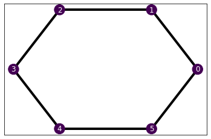
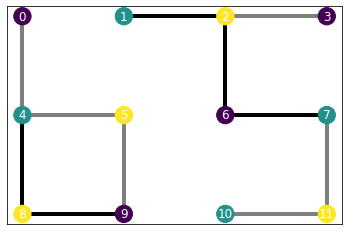
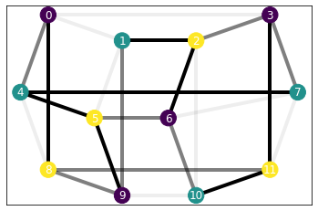

nodes, edges = np.array([0, 1, 2]), [np.array([0, 1]), np.array([0, 2])]
g = Graph(nodes, edges)Hamiltonian
The hamiltonian describes the problem we want to tackle. It contains all the relevant information defining the physical system.
Graph
Before going into the actual Hamiltonians, we introduce the Graph class, which is an essential constituent of the Hamiltonian.
Graph
Graph (nodes, edges)
Initialize self. See help(type(self)) for accurate signature.
We define the structure of the problem with a Graph, upon which we introduce the interactions. In order to create a Graph, we need to provide a list of nodes and edges, which are the links between nodes.
assert (g.nodes == nodes).all()
assert np.all([e_graph == e for e_graph, e in zip(g.edges, edges)])Furthermore, Graphs provide some useful properties that provide useful information about the graph.
assert g.n_nodes == len(nodes)
assert g.n_edges == len(edges)We have predefined some common graph structures in typical physical systems, such as a one-dimensional chain or a two-dimensional square lattice, both with or without periodic boundary conditions (denoted as pbc). However, notice that implementing graphs allows us to tackle problems with arbitrary dimensions and connectivities.
Chain1D
Chain1D (N, pbc=True)
Create a one-dimensional chain of N nodes and periodic boundary conditions pbc.
chain = Chain1D(6)
chain.nodes, chain.edges(array([0, 1, 2, 3, 4, 5]),
[array([0, 1]),
array([1, 2]),
array([2, 3]),
array([3, 4]),
array([4, 5]),
array([0, 5])])assert (chain.nodes == np.arange(6)).all()
edges = [np.sort([i, (i+1)%6]) for i in range(6)]
assert np.all([e_chain == e for e_chain, e in zip(chain.edges, edges)])SquareLattice
SquareLattice (N, M, pbc=True)
Create a NxM square lattice with periodic boundary conditions pbc.
lattice = SquareLattice(3, 4, pbc=False)lattice.edges[array([0, 1]),
array([0, 4]),
array([1, 2]),
array([1, 5]),
array([2, 3]),
array([2, 6]),
array([3, 7]),
array([4, 5]),
array([4, 8]),
array([5, 6]),
array([5, 9]),
array([6, 7]),
array([ 6, 10]),
array([ 7, 11]),
array([8, 9]),
array([ 9, 10]),
array([10, 11])]Hamiltonian
Hamiltonian
Hamiltonian (graph, interactions)
Create a Hamiltonian over a graph with defined interactions.
Once we have laid out the topology of the problem, we can define the interactions happening in the system. These, together with the underlying Graph, define a Hamiltonian. The interactions come in the form of a list of tuples indicating the support and the interaction term [(support, term)]. We describe the terms using Pauli matrices \(\sigma^x, \sigma^y, \sigma^z\) and the identity. Given that these are the variables that the SDPSolver uses to instantiate and solve the optimization problem, we need to write them in terms of picos varibales. We provide the variables x, y, z, Id within the Hamiltonian class to ease the process of defining Hamiltonians for new problems.
For instance, in the case of non-interacting qubits with a transverse field, described by \(H = \sum_i\sigma^x_i\), the interactions would be [(0, x), (1, x), ...]. On an Ising-like Hamiltonian, such as \(H=J\sum_i\sigma^z_i\sigma^z_{i+1} + B\sum_i\sigma^x_i\), we have to account for the tensor product \(\sigma^z_i\sigma^z_{i+1}\), which in the picos library is performed with the @ operator. Hence, we would define the interactions as [(0, B*x), (1, B*x), ..., ([0, 1], J*z@z), ([1, 2], J*z@z), ...]. In fact, the supports should be np.ndarrays, e.g., np.array([0, 1]), which we take from the Graph.edges, and we should access the Pauli variables from the Hamiltonian with self, e.g., self.x.
Finally, in order to keep a consistent file naming, we provide the Hamiltonians with a name property that is a string naming the model. We show some examples below.
Local Hamiltonians
For now, there are issues pickling some picos instances, which we use to define the interactions (see serializing below). We use the LocalHamiltonian class to define a way to pickle the Hamiltonian class assuming 2-local Hamiltonians, which encompasses most physically relevant Hamiltonians.
LocalHamiltonian
LocalHamiltonian (graph, interactions, *aux_args)
Local Hamiltonian with two-body interactions. This class defines a structure for 2-local Hamiltonians of the form cls(graph, one_body_amplitudes, two_body_amplitudes, *aux_args). This allows us to serialize Hamiltonians with the reduce method, which we do not want to explicitly define for every new Hamiltonian. Let us know if you find any better solution to this.
Let’s see how to implement a transverse field Ising Hamiltonian and instantiate it in the onedimensional chain.
class IsingHamiltonian(LocalHamiltonian):
def __init__(self, graph, field, coupling):
field, coupling = arrayfy(field, graph.n_nodes), arrayfy(coupling, graph.n_edges)
one_body_terms = [(np.array([n]), field[n]*self.x) for n in graph.nodes]
two_body_terms = [(edge, coupling[e]*self.z@self.z) for e, edge in enumerate(graph.edges)]
interactions = one_body_terms + two_body_terms
super().__init__(graph, interactions)
self.name = 'ising'IsingHamiltonian
IsingHamiltonian (graph, field, coupling)
Local Hamiltonian with two-body interactions. This class defines a structure for 2-local Hamiltonians of the form cls(graph, one_body_amplitudes, two_body_amplitudes, *aux_args). This allows us to serialize Hamiltonians with the reduce method, which we do not want to explicitly define for every new Hamiltonian. Let us know if you find any better solution to this.
b, j = 0.75, 2.5
H_ising = IsingHamiltonian(chain, b, j)H_ising.interactions[(array([0]), <2×2 Real Constant: 0.75·x>),
(array([1]), <2×2 Real Constant: 0.75·x>),
(array([2]), <2×2 Real Constant: 0.75·x>),
(array([3]), <2×2 Real Constant: 0.75·x>),
(array([4]), <2×2 Real Constant: 0.75·x>),
(array([5]), <2×2 Real Constant: 0.75·x>),
(array([0, 1]), <4×4 Real Constant: 2.5·z⊗z>),
(array([1, 2]), <4×4 Real Constant: 2.5·z⊗z>),
(array([2, 3]), <4×4 Real Constant: 2.5·z⊗z>),
(array([3, 4]), <4×4 Real Constant: 2.5·z⊗z>),
(array([4, 5]), <4×4 Real Constant: 2.5·z⊗z>),
(array([0, 5]), <4×4 Real Constant: 2.5·z⊗z>)]H_ising.to_sdp()[(array([0]), <2×2 Real Constant: 0.75·x>),
(array([1]), <2×2 Real Constant: 0.75·x>),
(array([2]), <2×2 Real Constant: 0.75·x>),
(array([3]), <2×2 Real Constant: 0.75·x>),
(array([4]), <2×2 Real Constant: 0.75·x>),
(array([5]), <2×2 Real Constant: 0.75·x>),
(array([0, 1]), <4×4 Real Constant: 2.5·z⊗z>),
(array([1, 2]), <4×4 Real Constant: 2.5·z⊗z>),
(array([2, 3]), <4×4 Real Constant: 2.5·z⊗z>),
(array([3, 4]), <4×4 Real Constant: 2.5·z⊗z>),
(array([4, 5]), <4×4 Real Constant: 2.5·z⊗z>),
(array([0, 5]), <4×4 Real Constant: 2.5·z⊗z>)]assert H_ising.to_sdp() == H_ising.interactionsVisualization
Furthermore, we have provided the Hamiltonian class with a draw method. This provides us with a pictorial representation of the Hamiltonian. We represent the interaction strength with the edge transparency, and the on-site terms with the node colors. The scales are between the smallest to the largest value, so they provide an idea of the relative strengths.
We have given the different graphs a layout method that determines the position of the nodes in the plot. You do not need to define a specific layout in your own graphs, as the function will use the networkx.kamada_kawai_layout by default (mainly because the name is cool). For example, we have given a circular layout to the Chain1D using the predefined with networkx.circular_layout.
Let’s see how it looks in our example Ising Hamiltonian.
H_ising.draw()
In the case of a lattice, we have created our own custom a square-lattice-like pattern which adapts to periodic boundary conditions. Let’s first see how it looks with inhomogeneous parameters and without periodic boundary conditions.
b, j = [0., 0.5, 1.], [0., 0.75, 1.5]
H_ising = IsingHamiltonian(lattice, b, j)H_ising.draw()
Note
Notice here that we do not explicitly define the values of the interacting terms for every node and edge. The Hamiltonian takes care to replicate the pattern along the nodes and edges by order. The behaviour is consistent, although we do not recommend using this property unless you are confident it works as expected. It is mainly intended to perform simple patterns like homogeneous Hamiltonians, such as the one we defined before, or alternating exchange in one dimension.
In case you want to exploit it, we recommend paying close attention to the edge ordering. In the Chain1D the edges go in increasing order. In the SquareLattice, we sequentially parse the lattice rows from left to right, and top to bottom. We start at the first node and create two edges: the horizontal towards the right and the vertical downwards. This takes into account periodic boundary conditions.
Let’s see now a lattice with periodic boundary conditions! (We’re proud of this plotting :3)
lattice = SquareLattice(3, 4)
b, j = [0., 0.5, 1.], [0.1, 0.75, 1.5]
H_ising = IsingHamiltonian(lattice, b, j)
H_ising.draw()
Heisenberg models
In the presented work, we study a special case of the Heisenberg XY model. The quantum Heisenberg XY model is given by \[H=\sum_{i} J_{i}((1+\gamma)\sigma_{i}^x \sigma_{i+1}^x + (1-\gamma)\sigma_{i}^y \sigma_{i+1}^y) + \sum_{i}B_{i}\sigma_{i}^z,\] where \(J_i\) is the pair-wise antiferromagnetic exchange and \(B_i\) is the strength of the on-site magnetic field. The parameter \(\gamma\) induces an anisotropic interaction between directions \(x\) and \(y\). In the limit of \(\gamma=0\), we have the so-called XX model \[H=\sum_{i} J_{i}(\sigma_{i}^x \sigma_{i+1}^x + \sigma_{i}^y \sigma_{i+1}^y) + \sum_{i}B_{i}\sigma_{i}^z\,,\] whose results we report on the work Certificates of quantum many-body properties assisted by machine learning.
XXHamiltonian
XXHamiltonian (graph, linear, quadratic)
Local Hamiltonian with two-body interactions. This class defines a structure for 2-local Hamiltonians of the form cls(graph, one_body_amplitudes, two_body_amplitudes, *aux_args). This allows us to serialize Hamiltonians with the reduce method, which we do not want to explicitly define for every new Hamiltonian. Let us know if you find any better solution to this.
XYHamiltonian
XYHamiltonian (graph, linear, quadratic, gamma)
Local Hamiltonian with two-body interactions. This class defines a structure for 2-local Hamiltonians of the form cls(graph, one_body_amplitudes, two_body_amplitudes, *aux_args). This allows us to serialize Hamiltonians with the reduce method, which we do not want to explicitly define for every new Hamiltonian. Let us know if you find any better solution to this.
xy = XYHamiltonian(chain, 0.5, 1., 0.2)
xy.interactions[(array([0]), <2×2 Real Constant: 0.5·z>),
(array([1]), <2×2 Real Constant: 0.5·z>),
(array([2]), <2×2 Real Constant: 0.5·z>),
(array([3]), <2×2 Real Constant: 0.5·z>),
(array([4]), <2×2 Real Constant: 0.5·z>),
(array([5]), <2×2 Real Constant: 0.5·z>),
(array([0, 1]), <4×4 Complex Constant: 1.2·x⊗x + 0.8·y⊗y>),
(array([1, 2]), <4×4 Complex Constant: 1.2·x⊗x + 0.8·y⊗y>),
(array([2, 3]), <4×4 Complex Constant: 1.2·x⊗x + 0.8·y⊗y>),
(array([3, 4]), <4×4 Complex Constant: 1.2·x⊗x + 0.8·y⊗y>),
(array([4, 5]), <4×4 Complex Constant: 1.2·x⊗x + 0.8·y⊗y>),
(array([0, 5]), <4×4 Complex Constant: 1.2·x⊗x + 0.8·y⊗y>)]xx = XXHamiltonian(chain, 0.5, 1.)
xx.interactions[(array([0]), <2×2 Real Constant: 0.5·z>),
(array([1]), <2×2 Real Constant: 0.5·z>),
(array([2]), <2×2 Real Constant: 0.5·z>),
(array([3]), <2×2 Real Constant: 0.5·z>),
(array([4]), <2×2 Real Constant: 0.5·z>),
(array([5]), <2×2 Real Constant: 0.5·z>),
(array([0, 1]), <4×4 Complex Constant: x⊗x + y⊗y>),
(array([1, 2]), <4×4 Complex Constant: x⊗x + y⊗y>),
(array([2, 3]), <4×4 Complex Constant: x⊗x + y⊗y>),
(array([3, 4]), <4×4 Complex Constant: x⊗x + y⊗y>),
(array([4, 5]), <4×4 Complex Constant: x⊗x + y⊗y>),
(array([0, 5]), <4×4 Complex Constant: x⊗x + y⊗y>)]For completeness, we provide an additional example of the Heisenberg Hamiltonian including interaction in the \(\sigma^z\) direction \[H=\sum_i J_i(\sigma_{i}^x\sigma_{i+1}^x + \sigma_{i}^y\sigma_{i+1}^y + \sigma_{i}^z\sigma_{i+1}^z) + \sum_i B_i\sigma_i^z\] This model, with \(B_i=0 \ \forall i\), is used in [1]. See the SdP docs for further details.
XYZHamiltonian
XYZHamiltonian (graph, linear, quadratic)
Local Hamiltonian with two-body interactions. This class defines a structure for 2-local Hamiltonians of the form cls(graph, one_body_amplitudes, two_body_amplitudes, *aux_args). This allows us to serialize Hamiltonians with the reduce method, which we do not want to explicitly define for every new Hamiltonian. Let us know if you find any better solution to this.
xyz = XYZHamiltonian(chain, 0.5, 1.5)
xyz.interactions[(array([0]), <2×2 Real Constant: 0.5·z>),
(array([1]), <2×2 Real Constant: 0.5·z>),
(array([2]), <2×2 Real Constant: 0.5·z>),
(array([3]), <2×2 Real Constant: 0.5·z>),
(array([4]), <2×2 Real Constant: 0.5·z>),
(array([5]), <2×2 Real Constant: 0.5·z>),
(array([0, 1]), <4×4 Complex Constant: 1.5·(x⊗x + y⊗y + z⊗z)>),
(array([1, 2]), <4×4 Complex Constant: 1.5·(x⊗x + y⊗y + z⊗z)>),
(array([2, 3]), <4×4 Complex Constant: 1.5·(x⊗x + y⊗y + z⊗z)>),
(array([3, 4]), <4×4 Complex Constant: 1.5·(x⊗x + y⊗y + z⊗z)>),
(array([4, 5]), <4×4 Complex Constant: 1.5·(x⊗x + y⊗y + z⊗z)>),
(array([0, 5]), <4×4 Complex Constant: 1.5·(x⊗x + y⊗y + z⊗z)>)]Serializing
There are some issues serializing picos.Expressions. In our Hamiltonians we find picos.ComplexAffineExpressions, which are unpicklable. Hence, this restricts the way we can copy as well as save and load the Hamiltonians.
For this reason, we have defined a Hamiltonian.__deepcopy__ method, which returns a deep copy of all the parameters except for a shallow copy of the interactions. Furthermore, we have defined a LocalHamiltonian.__reduce__ method that allows us to serielize local Hamiltonians. This allows us to both deepcopy and save/load local Hamiltonians. However, all local Hamiltonians must be initialized with the syntax LocalHamiltonian(graph, one_body_amplitudes, two_body_amplitudes, *auxiliary_args).
fun, args = xx.__reduce__()
fun, args(__main__.XXHamiltonian,
(<__main__.Chain1D>,
[0.5, 0.5, 0.5, 0.5, 0.5, 0.5],
[1.0, 1.0, 1.0, 1.0, 1.0, 1.0]))xx_new = fun(*args)
xx_new.interactions[(array([0]), <2×2 Real Constant: 0.5·z>),
(array([1]), <2×2 Real Constant: 0.5·z>),
(array([2]), <2×2 Real Constant: 0.5·z>),
(array([3]), <2×2 Real Constant: 0.5·z>),
(array([4]), <2×2 Real Constant: 0.5·z>),
(array([5]), <2×2 Real Constant: 0.5·z>),
(array([0, 1]), <4×4 Complex Constant: x⊗x + y⊗y>),
(array([1, 2]), <4×4 Complex Constant: x⊗x + y⊗y>),
(array([2, 3]), <4×4 Complex Constant: x⊗x + y⊗y>),
(array([3, 4]), <4×4 Complex Constant: x⊗x + y⊗y>),
(array([4, 5]), <4×4 Complex Constant: x⊗x + y⊗y>),
(array([0, 5]), <4×4 Complex Constant: x⊗x + y⊗y>)]assert xx.interactions == xx_new.interactionsWith the __reduce__ method we can also deepcopy the Hamiltonians.
xx_copy = deepcopy(xx)assert xx.interactions == xx_copy.interactionsThe only issue with the way we have implemented the __reduce__ method is that, whenever the parent class has more input arguments than the child one, we need to manually fix it in the child one. For instance, XYHamiltonian takes the input gamma, but the XXHamiltonian, which inherits from the first one, does not have any additional argument besides the graph, the linear and the quadratic terms. In this case, we have to set XXHamiltonian.aux_args = [] after calling super().__init__ in the XXHamiltonian.__init__. Otherwise, the serializer will break due to an excess of input arguments trying to feed gamma into XXHamiltonian.
References
[1] F. Uskov and O. Lychkovskiy. A variational lower bound on the ground state of a many-body system and the squaring parametrization of density matrices. Journal of Physics: Conference Series 1163 012057 (2019)